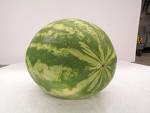
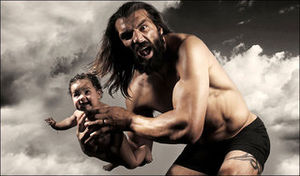
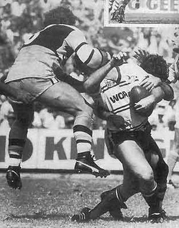

Rugby
 De: La Frikipedia, la enciclopedia extremadamente seria.
De: La Frikipedia, la enciclopedia extremadamente seria.
| De la serie deportes para todos:
|
| Rugby
|

|
| Típico Balón de Rugby
|
|
| Número de practicantes
|
Chorrocientos
|
| ¿Deporte Olímpico?
|
Depende de si llueve
|
| Campeonatos
|
American Melón championship, Rugby Playa, Campeonato Interestelar de Rugby
|
| ¿Donde se practica?
|
En un campo con mucha hierba
|
| ¿Control anti-dopping?
|
Solo se pueden fumar lo que se encuentran en el campo
|
| Riesgo de muerte
|
Alto si eres delgadito
|
| Árbitro
|
¿Quien necesita de eso si se pueden hacer placajes?
|
| Hinchas
|
Muchos, a todo el mundo le gusta ver muchas ostias este gran deporte
|
El rugby es un deporte que proviene de la lucha libre.
Procedencia del melón
 Típico melón de rugby
 Típico jugador vasco jugando a la vieja usanza
Se dice que el melón lo introdujo un vasco harto de jugar con los pies al furbo y decidió llevarse el balón(de furbo) pa su casa, entonces to el pueblo le siguió pa liarse a guantazos con él pa que devolviese el balón, pero no habia huevos de quitárselo, así que el listo del pueblo le hizo un trueque, el balón reondo por el melón, y este accedió. Desde entonces se juega con un melón.
Normas del rugby
- No puedes estar más de tres segundos sin moverte, sobretodo si eres flacucho.
- A algún idiota se le ocurrió que no se puede pasar el melón (no confundir con balón) para adelante
- El melón se pasa por la parte de arriba de los palos para marcar. Sólo un subnormal se metería como portero.
- Si se te cae el melón, nunca sabrás hacia dónde rebotará. Nota: Al melón también se le puede llamar huevo.
Selecciones
- Estadounidense: Reza a Dios para enfrentarte a ella.
- Italiana: Se dice que consigue mucha pasta. y visten de un azul muy feo
- Inglesa: Todo lo resuelven a patadas.
- Francesa: Conocida por su juego sucio.
- Japonesa: Siempre ganan porque, al ser tan pequeñitos, pasan por debajo de las piernas de los contrincantes y se escapan solos.
- Árabe: Su gran poder de violencia los hace invencibles, por eso no tiene selección.
- Vaticana: Siempre les descalifican por ser unos santos y por jugar con sotana, y porque dando hostias son los mejores.
- Brasileña: Los echan por hacer segadas para tirar al suelo a los contrarios y por hacer continuamente toques con el balón.
- Argentina: Le da vidisha al partido y tras un partido, el equipo contrario termina con 4/5 lesionados por: golpes, patadas a la altura de la cara (especial para los chilenos).
- Sudafricana: Corren tanto que los descalifican.
- Australiana: Se ponen a saltar y nunca juegan en serio.
- Nueva Zelanda: Se supone que es la mejor, pero en los mundiales no lo demuestran.
- Samoa, Tonga y Fiji: Algo negro de 2 metros y 120 kilos te pasará a toda velocidad. Eso sí, por encima
- Irlanda: La mejor selección. Eso sí, cuando están sobrios.
- España: ¿Tú los ves? ¿NO? Pos yo tampoco.
El placaje
Dícese del acto de dar una ostia a alguien que se atreva a pasar cerca tuyo y, si puede ser, hacerle daño. Hay dos tipos: los legales y los ilegales.
Legales
- Por las piernas: El placaje de toda la vida. Pillas al tío por las piernas y lo tiras al suelo.
- La Lapa: Es el que practican los que no saben y/o no pueden placar. Consiste en engancharse a la víctima hasta que se canse y se tire al suelo.
- La pegatina: Pues eso, como su nombre dice. Consiste en fingir que placas a un tío pero por miedo, solo pones los brazos por en medio y el tio pasa sin darse cuenta de que le has tocado... Así placan los mariquillas
- El costillar: Es ese placaje que te dan cuanto estás medio tonto haciendo cualquier cosa y te rompen, como mínimo, un par de costillitas. Pa' joder, es totalmente legal, ¡así que tened cuidado con ellas!
Hasta aquí, todo bien, ¿no? Veamos los ilegales.
 Maestro en el arte de la corbata
Ilegales
- La jabalina: tomandolo de los muslos, se lo levanta hasta que sus pies esten a la altura de tus codos y dejarlo caer en un ángulo de 65º como para que se olvide de lo que era un cuello sano
- La corbata: Lanzarse al cuello de la víctima y dejarlo sin nuez en el acto.
- El pisotón: No es un placaje, pero si le tienes rabia a un tío que está en el suelo o simplemente te gusta hacerlo, pégale unos pisotones en la cara hasta que te quedes a gusto.
¿Sabías que...?
- ...los placajes, excepto que te plaquen como en la foto, no duelen?
- ...te lesionas más en el furbo que en Rugby?
- ...el Rugby tiene 3 tiempos, y que el tercero tiene cerveza para todos?
- ...estar gordo en este deporte es una ventaja?
Autor(es):
- Krusher
- Nexo
- Pexy
- NiKo-TiNa
- Frikih
- Jeji
- Aregreb
- NiTuS
- Chopinex
- Cibercrank
Frikipedia 2005-2016, Licencia
GFDL 1.2 - Extraído por FrikiLeaks